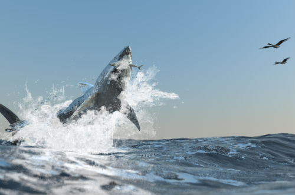

Per Karlsson
Demo Reel
demo reel 2011 from Per Karlsson on Vimeo.
Emacs Config
Linux
wget https://raw.githubusercontent.com/karlssonper/emacs-c
onfig/master/.emacs > ~/.emacsOS X
curl "https://raw.githubusercontent.com/karlssonper/emacs-c
onfig/master/.emacs" > ~/.emacscs348b
{kind=link}
First prize in the 2012 Rendering Competition at Stanford.


A detailed explanation of the implementation can be found at http://karlssonper.github.io/cs348b/.
cs248
"Blowing Up Ships" by Per Karlsson and Victor Sand. Winner of the Technical Achievement Award at the 2012 Stanford Computer Game Competition.
The Stanford Computer Game Competition is the annual competition among the final projects in the course Interactive Computer Graphics at Stanford University, taught in 2012 by Prof. Vladlen Koltun.
CUDA Eulerian fluid solver
A simple water simulator written in CUDA C. Eulerian method using level set for surface tracking. It uses first order schemes for advecting velocities and level set. Iterative Jacobi method for pressure updates.